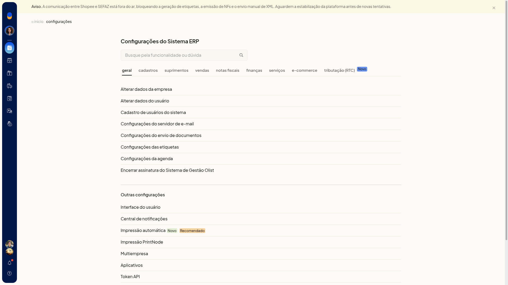
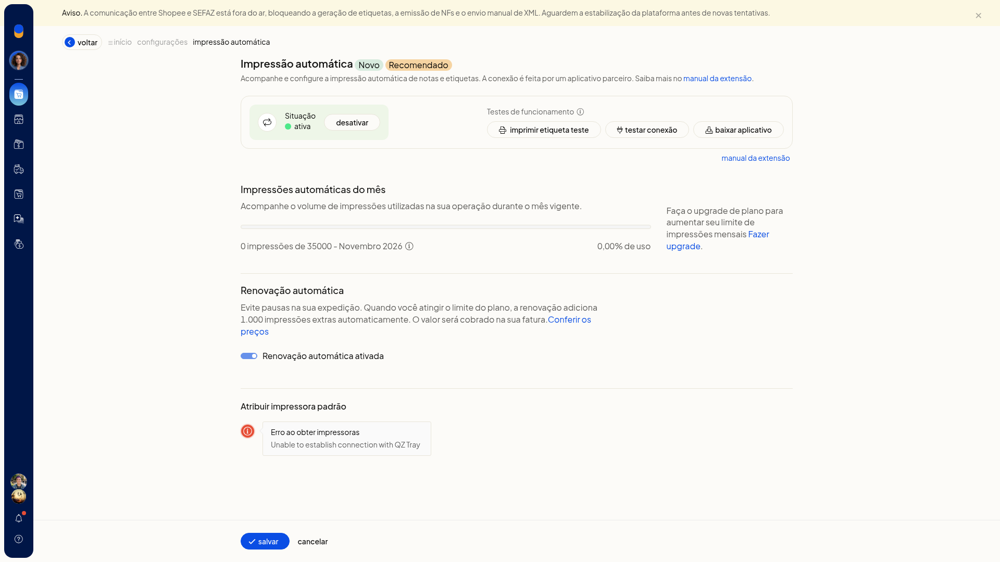
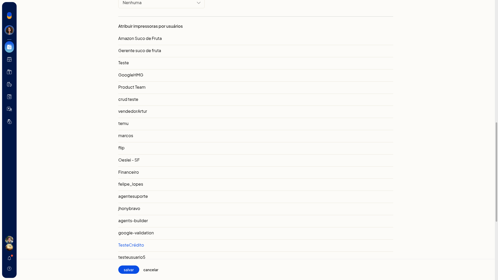
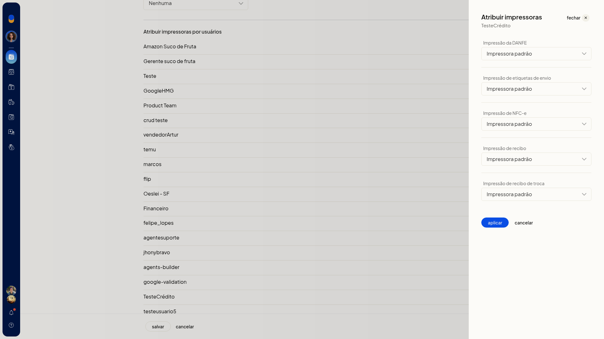

Impressão automática e PrintNode
A impressão automática e o PrintNode, no ERP da Olist, enviam DANFE, etiqueta de envio, NFC-e e recibos direto para a impressora, sem escolher o equipamento a cada documento.
Na impressão automática, você acompanha a cota, testa a conexão e aponta a impressora padrão. No PrintNode, você informa a chave da conta e define a impressora padrão da conta ou a impressora de cada pessoa.
Pré-requisitos
- Para a impressão automática listar as impressoras, o aplicativo de conexão (QZ Tray) precisa estar acessível.
- Para o PrintNode, tenha conta em www.printnode.com, o cliente instalado e logado nas impressoras, e a API key para colar no campo API Key.
Importante
- Sem o QZ Tray, a atribuição da impressora padrão na impressão automática mostra Erro ao obter impressoras e Unable to establish connection with QZ Tray.
- No PrintNode, a etiqueta de envio sai em ZPL e exige impressora do tipo Zebra.
Instruções
Pela impressão automática
-
Acesse Configurações > Configurações ERP > Geral > Impressão automática (Novo/Recomendado).

-
Confira a situação da impressão, a cota de uso e a opção Renovação automática ativada.
-
Se as impressoras não aparecerem, clique em Baixar aplicativo e deixe o QZ Tray acessível.
-
Clique em Testar conexão.
-
Atribua a impressora padrão. Com o QZ Tray acessível, a tela lista as impressoras. Sem ele, aparece o erro de conexão.

-
Clique em Imprimir etiqueta teste para validar a impressão.
Pelo PrintNode
- Acesse Configurações > Configurações ERP > Geral > Impressão PrintNode.
- Crie a conta em www.printnode.com, instale o cliente e faça login nas impressoras.
- Gere a API key no PrintNode e cole no campo API Key.
- Clique em Testar integração para validar a conexão.
- Em Atribuir impressoras padrão, selecione a impressora de cada documento. Cada lista começa em Nenhuma:
- Impressão da DANFE
- Impressão de etiquetas de envio
- Impressão de NFC-e
- Impressão de recibo
- Impressão de recibo de troca
-
Em Impressão de etiquetas de envio, escolha uma impressora Zebra.
-
Para definir a impressora de uma pessoa, abra o cadastro em Atribuir impressoras por usuários.

-
Selecione Impressora padrão em cada uma das cinco impressões e clique em Aplicar.

-
Clique em Salvar. DANFE, etiqueta de envio, NFC-e e recibos passam a usar a impressora padrão da conta ou a impressora definida para cada pessoa.
Resultado
Na impressão automática, a tela mostra a situação, a cota de uso e se a Renovação automática ativada está marcada. No PrintNode, os documentos ficam direcionados à impressora escolhida.
Informações adicionais
- A tela do PrintNode tem um atalho para a impressão automática.
- As impressoras listadas no PrintNode são as que o serviço devolve, inclusive térmicas, laser e PDF.